4 bidang utama
Teknis, web, visual, dan data
Pilihan Terbaik!
IT Support · Pengembangan Web · Surveyor
Saya memadukan dukungan teknis, pengembangan website, desain visual, dan pengolahan data untuk membantu pekerjaan menjadi lebih praktis, rapi, dan mudah digunakan.
Teknis, web, visual, dan data
Mitra kegiatan statistik BPS
Teliti, adaptif, dan kolaboratif
PROFIL SINGKAT
Saya tertarik pada pekerjaan yang menggabungkan teknologi, kreativitas, dan pemecahan masalah. Pengalaman sebagai mitra kegiatan statistik membantu saya terbiasa bekerja dengan data, mengikuti prosedur, melakukan pemeriksaan, serta berkoordinasi di lapangan.
Di bidang digital, saya mengembangkan aplikasi web sederhana, menyusun tampilan yang mudah dipahami, dan membuat materi visual sesuai kebutuhan. Saya senang mempelajari hal baru dan mengubah kebutuhan pengguna menjadi hasil kerja yang jelas serta fungsional.
Pemeriksaan kendala, bantuan pengguna, dan dokumentasi teknis.
Antarmuka responsif, pengelolaan data, dan aplikasi berbasis web.
Visual komunikasi, validasi data, dan dukungan operasional.
KEMAMPUAN
 CSSCSS3
CSSCSS3 JSJavaScript
JSJavaScript phpPHP
phpPHP LLaravel
LLaravel SQLMySQL
SQLMySQL FFigma
FFigma PsPhotoshop
PsPhotoshop AiIllustrator
AiIllustrator XlExcel
XlExcel CaCanva
CaCanva GitGit
GitGit 5HTML5
5HTML5PERJALANAN PROFESIONAL
Disusun kronologis dari pengalaman terbaru hingga paling awal.
Badan Pusat Statistik (BPS) Kota Jakarta Selatan
Mendukung kegiatan survei dan sensus melalui koordinasi pendataan lapangan, pemantauan pengumpulan data, pemeriksaan kelengkapan, validasi, serta pengolahan data sesuai pedoman kegiatan.
Dinas PPAPP · Penugasan proyek
Melakukan wawancara lapangan, mengumpulkan informasi responden, dan menjaga kelengkapan serta konsistensi data untuk mendukung analisis dan perencanaan.
Colibri Allied Care · Jakarta
Membuat materi visual untuk komunikasi dan promosi, serta membantu membangun dan memelihara website responsif agar informasi organisasi lebih mudah diakses.
Revo Print Shop · Jakarta
Menyiapkan berkas produksi, memeriksa kebutuhan cetak, menjalankan proses produksi, dan melakukan penyelesaian akhir agar hasil sesuai spesifikasi pesanan.
Thick Toast · Probation
Mendukung kebutuhan pemasaran dan dokumentasi acara melalui desain visual untuk keperluan sosial media.
KARYA PILIHAN
 ABSENKUPresensi · Logbook · MonitoringSISTEM WEB
ABSENKUPresensi · Logbook · MonitoringSISTEM WEBSistem berbasis web untuk mendukung presensi dan logbook peserta magang, dilengkapi geolokasi, dokumentasi foto, e-form harian, dan pemantauan admin.
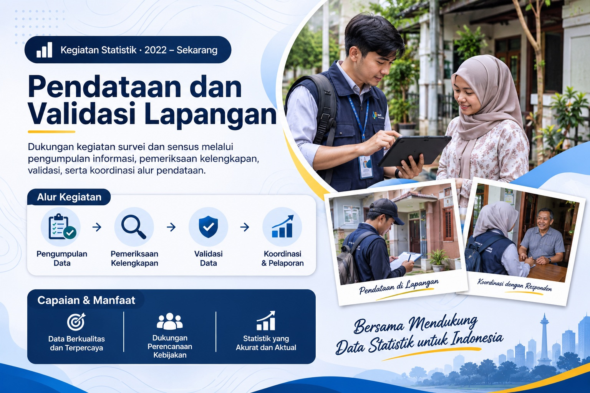
SurveyorMitra Statistik BPS · SPHADSURVEYORDukungan kegiatan survei dan sensus melalui pengumpulan informasi, wawancara lapangan, pemeriksaan kelengkapan, validasi data, serta koordinasi alur pendataan. Termasuk keterlibatan dalam kegiatan SPHAD.
 Modern UI/UXPortfolio ShowcaseUI/UX
Modern UI/UXPortfolio ShowcaseUI/UXEksplorasi desain antarmuka digital dengan hierarki informasi, komponen konsisten, dan pengalaman pengguna yang mudah dipahami.
LATAR BELAKANG
Sistem Informasi
Pendidikan menengah kejuruan
PENGEMBANGAN DIRI
Pilih kategori, lalu geser kartu untuk melihat dokumen.
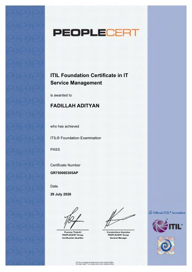
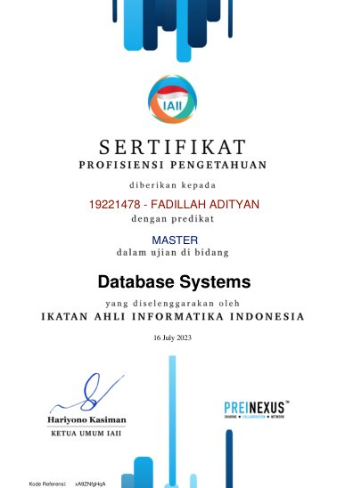
Ikatan Ahli Informatika Indonesia (IAII)
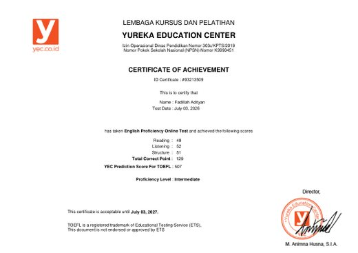
Yureka Education Center
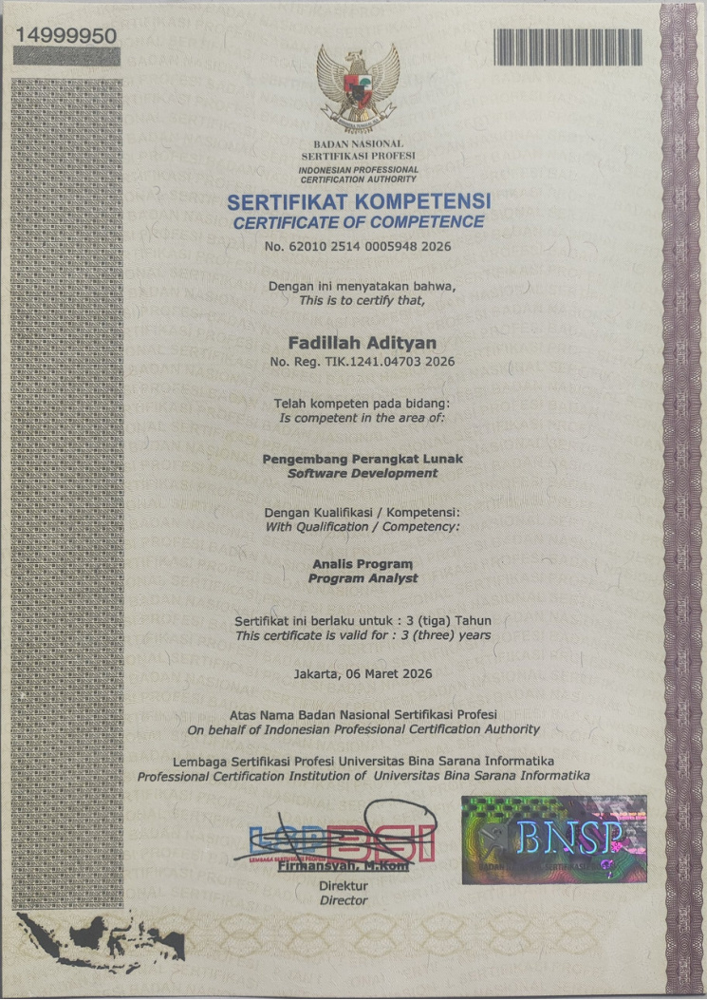
Lembaga Sertifikasi Profesi Universitas Bina Sarana Informatika
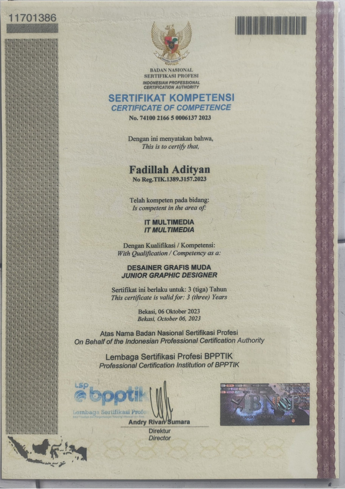
Lembaga Sertifikasi Profesi BPPTIK
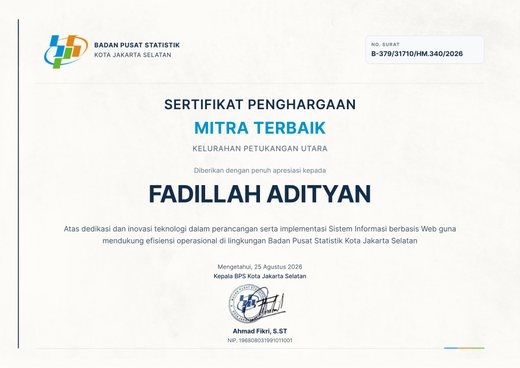
Badan Pusat Statistik Kota Jakarta Selatan
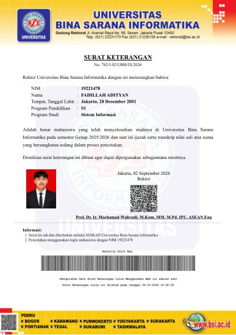
Universitas Bina Sarana Informatika
Dinas PPAPP Provinsi DKI Jakarta · Peran: Surveyor
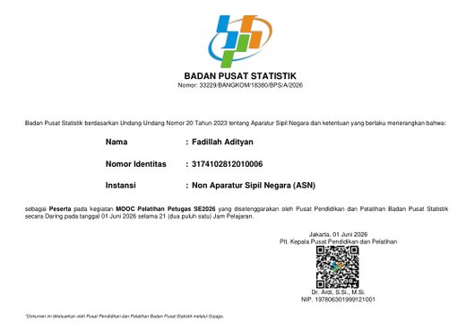
Badan Pusat Statistik
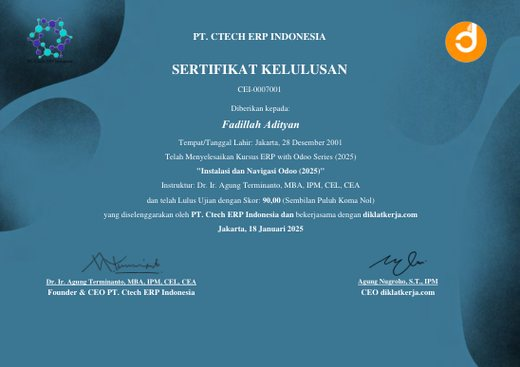
PT. Ctech ERP Indonesia dan diklatkerja.com
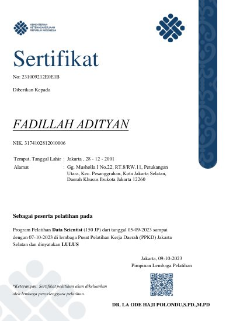
Kementerian Ketenagakerjaan / PPKD Jakarta Selatan
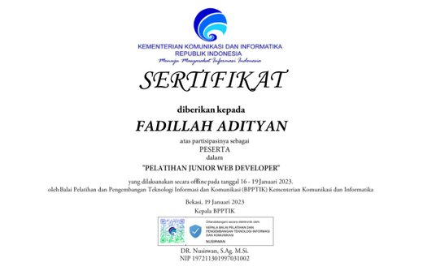
Kementerian Komunikasi dan Informatika (BPPTIK)
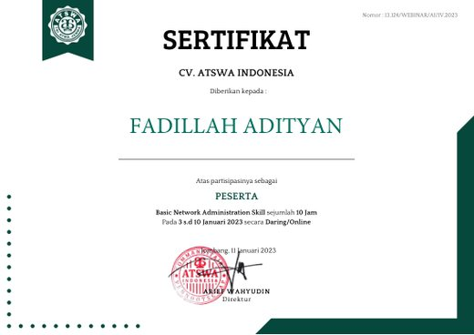
MARI TERHUBUNG
Saya terbuka untuk kesempatan kerja, kolaborasi, maupun proyek yang sesuai dengan kemampuan saya.